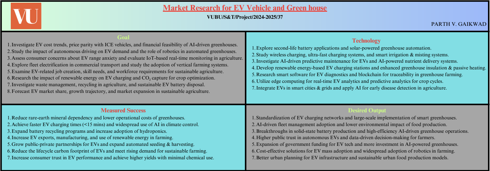
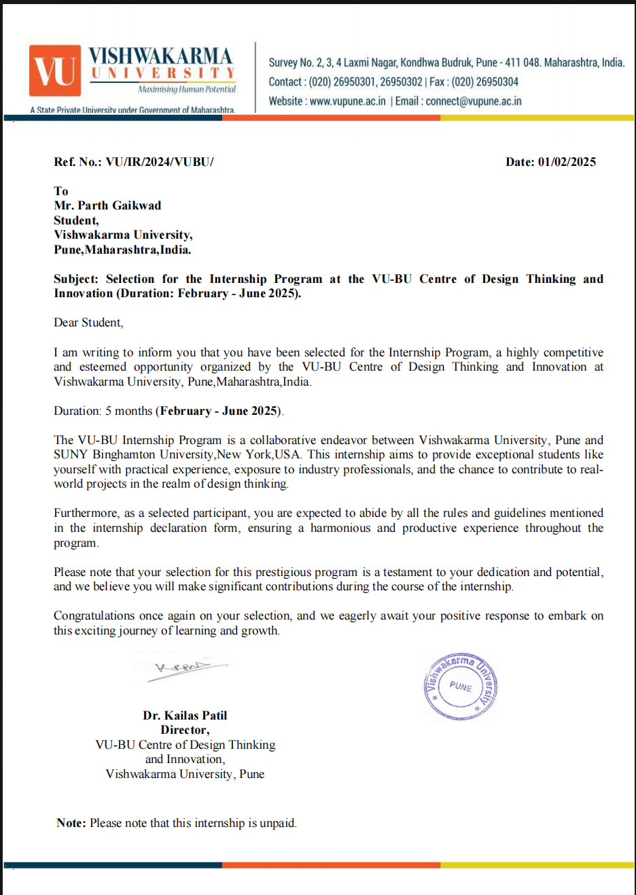
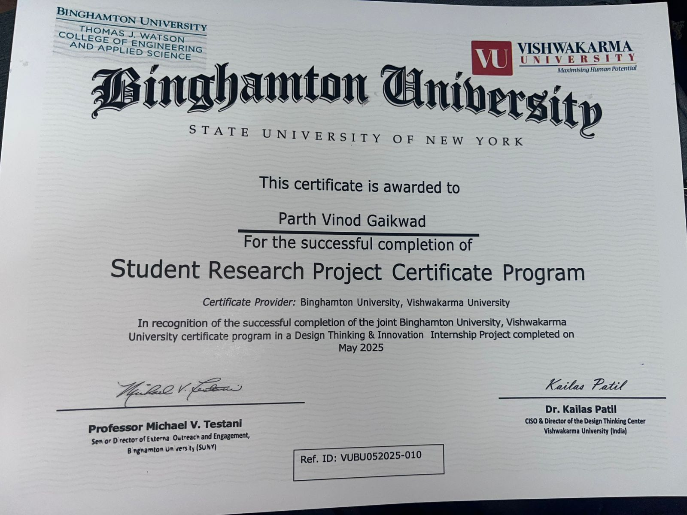
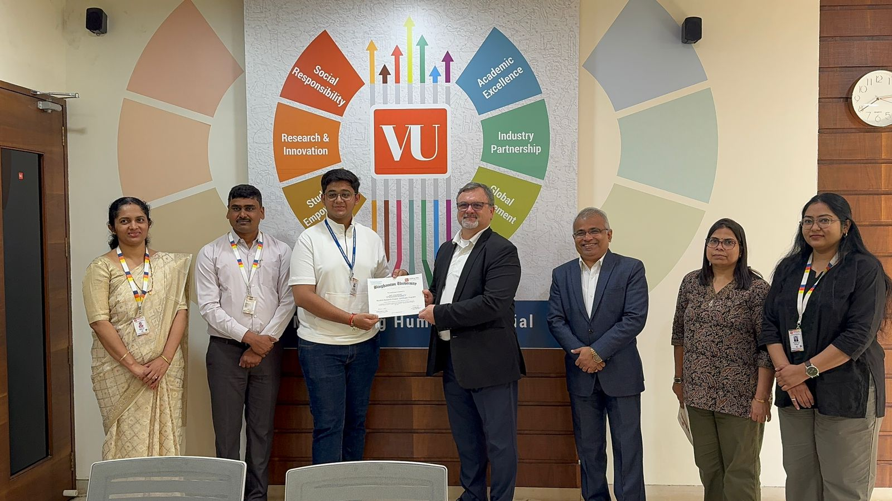

My Internships

Research & Analysis Intern – EV Greenhouse Technologies
Organization: VU-BU Centre of Design Thinking & Innovation
Project Code: VUBU/S&T/2024–2025/37
Duration: Feb 2025 – June 2025
🔋 Market Growth, Policy Impacts & Technological Advancements in EV Greenhouse Technologies
This internship was conducted under the VU-BU Centre of Design Thinking and Innovation as part of the academic research initiative for the academic year 2024–2025. The project focused on analyzing the rapid growth of Electric Vehicles (EVs) and their role in reducing greenhouse gas emissions.
📌 Internship Overview
The research aimed to study how market trends, government policies, and technological innovations are shaping the EV ecosystem. Emphasis was placed on sustainability, climate impact, and future adoption strategies in India and global markets.
🎯 Key Objectives
- 📈 Analyze EV market growth trends and adoption rates
- 🏛️ Study government policies and incentives affecting EV adoption
- 🔬 Examine technological advancements in batteries and charging infrastructure
- 🌍 Evaluate environmental impact and greenhouse gas reduction
🛠 Work & Contributions
- 📊 Conducted data-driven market and policy analysis
- 📑 Prepared analytical reports and documentation
- 🔍 Studied real-world EV case studies and technology roadmaps
- 🤝 Collaborated with academic mentors and research teams
📚 Tools & Skills Used
- Research & Data Analysis
- Policy Impact Evaluation
- Sustainability & Climate-Tech Concepts
- Technical & Academic Documentation
🌱 Outcome & Learning
This internship strengthened my understanding of EV ecosystems, sustainable technologies, and the role of innovation in climate action. It also enhanced my analytical thinking, research skills, and ability to translate complex technical insights into structured reports.
🏅 Certificate Distribution Ceremony


